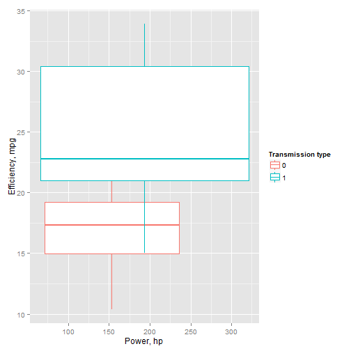

Car efficiency prediction
Author Kirill Zhuravlev
Course Developing Data Products
Done: 2016
Importance of the problem
- Car efficiency prediction is important for several groups of people:
- 1) Self-employed (pizza delivery, newspaper delivery, babysitters, tutors etc.)
- 2) Frequent travelers (salespersons, advertisers)
- 3) Small businesses (fast-food, pet grooming, carpet/house cleaning, yard/lawn management, etc.)
Importance of the problem (cont.)
- Costs of fuel are important in planning and managing business, may constitute significant portion of costs
- How efficient is the car you or your business use? Can we predict it based on its power?
- Does efficiency depend on the transmission type of your vehicle?
- We present new algorithm allowing one to predict the car fuel consumption efficiency (measured in miles per gallon of fuel) if the car power and its transmission type are given.
Data used to build the prediction model
 P-value is 0.0013, showing the statistical significance of the difference between two types of transmission.
Data with the linear regression models
 Blue and red lines are best linear fits for cars with manual and automatic transmission, respectively.
Blue and red lines are best linear fits for cars with manual and automatic transmission, respectively.
Web application done using shiny
Data was taken from 1974 Motor Trend US magazine. We used simple linear regression model to predict the efficiency of a vehicle based on its power, measured in horsepowers.
Link to application:
https://kzhuravlev.shinyapps.io/My_data_product_project/